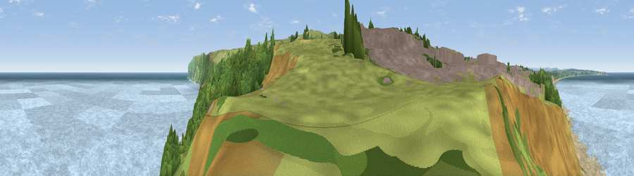

Viewpoint near Speeton
#10246 in England · top 32% of its area beats it · near Speeton · access?Where it is
The exact computed spot (TA 14625 75825). Click the marker for map links.
Public access: no public right of way or access land is recorded at this exact spot — it may be on private land. Computed from Natural England's CRoW access layer and OpenStreetMap rights of way — not the legal definitive map. Always verify locally.
The view, rendered

A 360° render of this exact spot computed from the terrain model, tree cover and land cover — summer colours, afternoon light, calibrated against photographs of famous viewpoints. Real trees, hedges and buildings will differ in detail.
The panorama
Grey silhouette: terrain skyline in each direction (720 bearings, Earth curvature and refraction included). Dashed green: skyline with trees (+15 m) and buildings (+8 m) as obstacles. Blue strip: how far the ground is visible on each bearing.
Where the view opens
Wedge length = distance to the farthest visible ground on that bearing (vegetation-aware). Rings at 10, 25 and 50 km.
What fills the view
57% water · 18% grassland · 12% woodland · 8% bare ground · 4% built-up ·
Angular shares of the visible panorama (visual magnitude), not map area. Landscape diversity 0.54 (0–1 Shannon).
Key numbers
More beautiful places nearby
The staircase of upgrades: each row has a higher view potential than everything closer. Driving times are estimates from straight-line distance, calibrated against real road routing — check an actual route before setting out.
| Place | Direction | Drive | Score |
|---|---|---|---|
| Viewpoint near Speeton | SE · 0 km | ~1 min | 68.5 |
| Viewpoint near Speeton | S · 1 km | ~3 min | 80.0 |
| Olivers Mount | NW · 15 km | ~27 min | 80.3 |
| Viewpoint near Ravenscar | NNW · 30 km | ~46 min | 82.7 |
| Viewpoint near Ravenscar | NNW · 31 km | ~48 min | 87.3 |
| Viewpoint near Ravenscar | NNW · 32 km | ~50 min | 90.0 |
| Viewpoint near Easington | NW · 60 km | ~82 min | 90.2 |
| The Knoll | SSW · 420 km | ~398 min | 91.0 |
54.16544, -0.24582 · source: screening · position refined by local search. Computed location — check access rights before visiting.